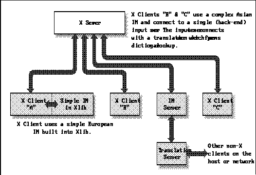
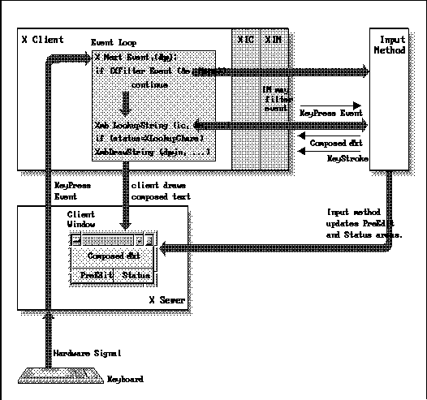

Xlib Programming Manual (O'Reilly & Associates, Inc.) |
In an internationalized program, you can't assume any particular mapping between keystrokes and input characters. An internationalized program must run in any locale on a single workstation, using a single keyboard. The mapping between keystrokes and Japanese characters is very different (and more complex) than the mapping between keystrokes and Latin characters, for example. When there are more characters in the codeset of a locale than there are keys on a keyboard, some sort of input method is required for mapping between multiple keystrokes and input characters. R5 supports the internationalization of keyboard input with the new abstractions X Input Method (XIM) and X Input Context (XIC) and the new functions, XmbLookupString() and XwcLookupString(), which return a string in the encoding of the locale. Because internationalized text input is a complex topic, we begin with a discussion of the important issues of internationalized text input in Section 11.1, "Issues of Internationalized Text Input" and an overview of the X input method architecture in Section 11.2, "Overview of the X Input Method Architecture." The remaining sections explain the individual topics required in order to implement internationalized text input.
Before beginning with internationalized text input, bear in mind that input methods are a technology that has previously been used only in ad hoc ways for specific languages. Driven by industry demand, it has very quickly advanced from research topic to X Consortium standard, and now must operate correctly in any locale. It is a difficult problem and R5 does not provide a complete solution. One frustration is the ambiguity, in places, of the XIM specification, which defines how an input method interacts with an Xlib application. This book attempts to resolve those ambiguities in reasonable ways, but in practice, much remains "implementation defined," and internationalized programs may have to be tailored to operate correctly with a few particular target input methods. None of the input methods that are shipped with R5 are part of the core distribution, and none are fully robust or well documented (not in English, at least). The XIM designers envision that their internationalized text input mechanism will be incorporated within toolkits and Xt widgets, and thus will be hidden from most programmers. Until these widgets are available, however, performing truly internationalized text input may be a difficult task.
R5 as shipped from MIT contains two separate implementations
of the input method internationalization facilities. The "Xsi" implementation
is the default on all but Sony machines, which use the "Ximp" implementation.
Each implementation defines its own protocol for communication between
Xlib and input methods (which are implemented as Separate processes). Ximp
and Xsi each come with contributed input methods which are not compatible
with each other. Steps are now going on within the X Consortium to standardize
on one of these implementations, so you should enquire about the status
of that effort before putting significant effort into a product using one
of these implementations.
But for many European languages, this technique is not sufficient. The most common accented characters may appear directly on a keyboard (the é, è, and ç in French, for example) but this still leaves a variety of other characters that cannot be entered with any single shifted or unshifted keystroke. French typewriters have a key that will produce an umlaut or a caret, without advancing the carriage, so to produce a û, for example, you would strike the caret key followed by the "u" key. In computer systems, a variety of methods have been developed for entering these accented characters. Often they involve a Compose key (found on many DEC keyboards) or any "dead key" which, does not send a code when struck but places the keyboard into a special compose mode (sometimes indicated by a light on the keyboard) in which one or more of the following keystrokes are combined into a single character. If this sort of input method is implemented in the keyboard hardware or in the operating system software, then it behaves transparently to the programmer who can simply read characters, assured that the user will have some way of entering any text desired.
As with internationalized text output, it is with the Asian ideographic languages that things become complicated. Japanese and Korean both have phonetic alphabets that are small enough to physically map onto a keyboard. It is sometimes adequate to leave text in this phonetic alphabet, but usually the user will want the final text to be in the full ideographic language. Input methods for these languages commonly have the user type the phonetic symbols for a particular word or words and signal somehow when this composition or pre-editing is finished. The input method then looks up that string of phonetic characters in a dictionary and converts it to the equivalent character or characters in the ideographic system. Sometimes there will be more than one character with a given phonetic representation, in which case the user will have to select between them.
These methods are obviously more complex than European compose methods. They are modal, and must display a lot of state information. It is not enough to have a keyboard light that tells users that they are composing an ideographic character; the computer must display the phonetic characters as the user types them, allow the user to edit them, and then when the user is done, compose them into an ideographic character or characters. The conversion from phonetic to ideographic characters requires a large dictionary, and finally, as noted above, the input method may have to display a menu or popup dialog box so the user can choose among ideograms with the same phonetic representation.
Because input methods can be so large and complex, and
because they vary so much from locale to locale, it does not make sense
to link every application with a generic input method which is somehow
localized at application startup. Instead, an input manager is usually
run as a separate process that communicates with the X server and with
the application. At application startup, the setting of the locale or the
"im" locale modifier determines to which input manager the application
establishes a connection. R5 provides new routines and datatypes in Xlib
which support this sort of internationalized text input. The next section
provides an overview of the Xlib architecture for internationalized text
input.
Possible input method architectures

The XIM architecture was designed to support two models of input method, known as front-end and back-end methods. A front-end input method intercepts events from the X server before they reach the application. A back-end method filters events from the application, before the application has processed them. Because internationalized programs must support either model of input method, the distinction is of little importance to the programmer. It is discussed in the XIM specification, however, and you may run across it in other discussions of input methods.
Recall the distinction between internationalized and multilingual applications. There is nothing to prevent an application from opening multiple input methods for multiple locales, but internationalized applications will generally operate only in a single locale and will therefore only need a single input method.
A text editor that supported multiple editing windows within a single top-level window could choose to create one IC for each editing window, or to share only one IC among all such windows. In the first case, each window would have different Preedit and Status areas, and each could be in a different intermediate state of pre-editing. In the second case, there would be a single Preedit and a single Status area shared by all editing windows, and the application would probably reset the state of the IC each time the input focus moved from one window to another.
If an application has multiple text entry windows using multiple input contexts, that application will have to call XSetICFocus() every time the input focus changes. An application that shares a single IC among multiple text entry windows will have to set the FocusWindow attribute of that IC each time the focus changes. Note that focus changes can be changes of the focus window known to the X server, or they can be application-internal focus changes, controlled by event redirection as is done in Xt and other toolkits.
Some input methods intercept keyboard events before the application has a chance to see them. If this is the case, they will send a synthetic KeyPress event with a keycode of 0 when there is composed input that should be looked up by the application.
It is not safe to assume that the IM will only need events that the application currently receives, so the IM places an event mask for events in which it is interested in an attribute of each IC. The application is responsible for requesting to receive those events in the window of the IC.
How a keystroke becomes a displayed character in an internationalized application

The XIM varargs interface and attribute naming conventions
The XNPreeditAttributes and XNStatusAttributes attributes of an input context have a number of sub-attributes. In order to set or query these values, the programmer must specify a nested argument list of type XVaNestedList*. A value of this type is created with a call to the function XVaCreateNestedList(). This function takes a dummy integer argument (as required by ANSI-C) followed by a null-terminated variable length list of name/value pairs. XVaCreateNestedList() can be conveniently called from within an argument list to another function, as is shown in Example 11-2.status = XSetICValues(ic, XNFocusWindow, w, XNGeometryCallback, HandleIMGeometry, NULL);
A nested call to XVaCreateNestedList()
Nested argument lists can also be used to specify top-level attributes. To do this, use the special name XNVaNestedList which will cause the contents of the following nested list to be logically inserted into the argument list at the current position.XVaNestedList nlist; ic = XCreateIC(im, XNInputStyle, XIMPreeditPosition | XIMStatusNothing, XNPreeditAttributes, nlist = XCreateVaNestedList( 0, /* dummy argument */ XNSpotLocation, cursor_location, XNFontSet, font_set, NULL), XNFocusWindow, focus_window, NULL); XFree(nlist);
Note that XVaCreateNestedList() allocates memory for the list it returns, which must be freed with a call to XFree(). Also note that if any of the values in the list are pointer types, the data pointed to must remain valid for the lifetime of the list.
The designers of the XIM specification chose this varargs-and-named-attributes
interface over the more familiar structure-and-flags interface used by
XChangeWindowAttributes() and XChangeGC(), for example, because
they felt it provided "more flexibility." The perceived flexibility to
the programmer is probably a matter of personal taste, but the varargs
interface certainly provides more flexibility for future extensions--new
attributes and vendor- or IM-specific attributes can easily be added without
destroying binary compatibility.
XOpenIM() also uses the current locale and locale modifiers as implicit arguments. The locale determines the default input method that XOpenIM() will connect to, as well as the encoding of the strings which will be returned by Xmb/XwcLookupString(). The locale is bound to an input method when it is open--the locale that was in effect when the input method was opened will be used by all input contexts of that input method regardless of the current locale when they are created.
The locale determines a default input method to be opened by XOpenIM(), but it cannot be assumed that only one input method will be available in each locale. Therefore X defines a locale modifier named "im" which can be used to override the default input method of the locale. The programmer should call XSetLocaleModifiers() to set all X locale modifiers ("im" is currently the only one). The user can specify a desired input method by setting the (UNIX) environment variable XMODIFIERS to a string of the form "@im=input method name."
When an input method will no longer be used, it may be closed with a call to XCloseIM().
Example 11-3shows how to establish the locale and open a connection to the input method for that locale.
Establishing the locale and opening an XIM
#include <stdio.h>
#include <X11/Xlib.h>
/*
* include <locale.h> or the non-standard X substitutes
* depending on the X_LOCALE compilation flag
*/
#include <X11/Xlocale.h>
main(argc, argv)
int argc;
char *argv[];
{
Display *dpy;
XIM im;
char *program_name = argv[0];
/*
* The error messages in this program are all in English.
* In a truly internationalized program, they would not
* be hardcoded; they would be looked up in a database of
* some sort.
*/
if (setlocale(LC_ALL, "") == NULL) {
(void) fprintf(stderr, "%s: cannot set locale.,program_name);
exit(1);
}
if ((dpy = XOpenDisplay(NULL)) == NULL) {
(void) fprintf(stderr, "%s: cannot open Display., program_name);
exit(1);
}
if (!XSupportsLocale()) {
(void) fprintf(stderr, "%s: X does not support locale %s.,
program_name, setlocale(LC_ALL, NULL));
exit(1);
}
if (XSetLocaleModifiers("") == NULL) {
(void) fprintf(stderr, "%s: Warning: cannot set locale modifiers.,
program_name);
}
/*
* Connect to an input method.
* In this example, we don't pass a resource database
*/
if ((im = XOpenIM(dpy, NULL, NULL, NULL)) == NULL) {
(void)fprintf(stderr, "%s: Couldn't open input method,
program_name);
exit(1);
}
.
.
.
To get the list of supported interaction styles, call XGetIMValues() passing the IM, the name XNQueryInputStyle, and the address of a variable of type XIMStyles *. The XIMStyles structure is shown in Example 11-4.
The XIMStyles structure
typedef unsigned long XIMStyle;
typedef struct {
unsigned short count_styles;
XIMStyle *supported_styles;
} XIMStyles;
The call to XGetIMValues() will return a pointer to
a XIMStyles structure which contains a list of supported styles
and the number of styles in the list. The client is responsible for freeing
the XIMStyles structure when done with it.
Each XIMStyle in the list of supported styles is an unsigned long in which various bit flags describing the style are set. The valid flags and their meanings are described below:
Section 11.4.2, "Querying Input Method Values" lists the possible interaction styles, and explains how to query an input method for supported styles. Example 11-5 shows how to select Preedit and Status interactions styles and create an IC to use those styles.
Choosing an interaction style and creating an IC
#include <stdio.h>
#include <X11/Xlib.h>
#include <X11/Xlocale.h>
main(argc, argv)
int argc;
char *argv[];
{
Display *dpy;
Window win;
XFontSet fontset;
XIM im;
XIC ic;
XIMStyles *im_supported_styles;
XIMStyle app_supported_styles;
XIMStyle style;
XIMStyle best_style;
XVaNestedList list;
char *program_name = argv[0];
int i;
.
.
.
/* figure out which styles the IM can support */
XGetIMValues(im, XNQueryInputStyle, &im_supported_styles, NULL);
/* set flags for the styles our application can support */
app_supported_styles = XIMPreeditNone | XIMPreeditNothing | XIMPreeditArea;
app_supported_styles |= XIMStatusNone | XIMStatusNothing | XIMStatusArea;
/*
* now look at each of the IM supported styles, and
* chose the "best" one that we can support.
*/
best_style = 0;
for(i=0; i < im_supported_styles->count_styles; i++) {
style = im_supported_styles->supported_styles[i];
if ((style & app_supported_styles) == style) /* if we can handle it */
best_style = ChooseBetterStyle(style, best_style);
}
/* if we couldn't support any of them, print an error and exit */
if (best_style == 0) {
(void)fprintf(stderr, "%s: application and program do not share a,
program_name);
(void)fprintf(stderr, "%s: commonly supported interaction style.,
program_name);
exit(1);
}
XFree(im_supported_styles);
/*
* Now go create an IC using the style we chose.
* Also set the window and fontset attributes now.
*/
list = XVaCreateNestedList(0, XNFontSet, fontset, NULL);
ic = XCreateIC(im, XNInputStyle, best_style,
XNClientWindow, win,
XNPreeditAttributes, list,
XNStatusAttributes, list,
NULL);
XFree(list);
if (ic == NULL) {
(void) fprintf(stderr, "Couldn't create input context);
exit(1);
}
.
.
.
}
/*
* This function chooses the "more desirable" of two input styles. The
* style with the more complicated Preedit style is returned, and if the
* styles have the same Preedit styles, then the style with the more
* complicated Status style is returned. There is no "official" way to
* order interaction styles; this one seems reasonable, though.
* This is a long procedure for a simple heuristic.
*/
XIMStyle ChooseBetterStyle(style1,style2)
XIMStyle style1, style2;
{
XIMStyle s,t;
XIMStyle preedit = XIMPreeditArea | XIMPreeditCallbacks |
XIMPreeditPosition | XIMPreeditNothing | XIMPreeditNone;
XIMStyle status = XIMStatusArea | XIMStatusCallbacks |
XIMStatusNothing | XIMStatusNone;
if (style1 == 0) return style2;
if (style2 == 0) return style1;
if ((style1 & (preedit | status)) == (style2 & (preedit | status)))
return style1;
s = style1 & preedit;
t = style2 & preedit;
if (s != t) {
if (s | t | XIMPreeditCallbacks)
return (s == XIMPreeditCallbacks)?style1:style2;
else if (s | t | XIMPreeditPosition)
return (s == XIMPreeditPosition)?style1:style2;
else if (s | t | XIMPreeditArea)
return (s == XIMPreeditArea)?style1:style2;
else if (s | t | XIMPreeditNothing)
return (s == XIMPreeditNothing)?style1:style2;
}
else { /* if preedit flags are the same, compare status flags */
s = style1 & status;
t = style2 & status;
if (s | t | XIMStatusCallbacks)
return (s == XIMStatusCallbacks)?style1:style2;
else if (s | t | XIMStatusArea)
return (s == XIMStatusArea)?style1:style2;
else if (s | t | XIMStatusNothing)
return (s == XIMStatusNothing)?style1:style2;
}
}
The value arguments passed to XGetICValues() must be valid pointers to locations in which to store the requested attribute values. XGetICValues() will allocate memory for the storage of some of these attributes, and this memory must be freed by the client with a call to XFree().
To query the values of Preedit and Status sub-attributes, create a nested list of name/value pairs, where the values are pointers to storage and pass this nested list as the value of the XNPreeditAttributes or XNStatusAttributes attributes. You cannot query the value of all sub-attributes by passing a XVaNestedList* as the value of XNPreeditAttributes or XNStatusAttributes--XGetICValues() does not build and return a nested list of sub-attributes
Both XSetICValues() and XGetICValues() return a char * which is NULL if no errors occurred, or points to the name of the first attribute that could not be set or queried.
If you are using a single IC to handle input across several windows, and the input focus shifts from one of these windows to another, then the IC's XNFocusWindow attribute should be changed, you needn't call XSetICFocus(). Depending upon your user interface, you may also want to reset the IC when focus changes like this.
Some attributes are used for communication in the other direction. One is used by the input method to tell the client which types of X events it requires, and another is used by the input method to request a new size for its Preedit and Status areas. Most attributes may be freely modified, but note that some must be set when the IC is created, others must be set exactly once, and others still are read-only and must never be set.
The attributes are listed below. Most attributes provide default values, but recall that some must be specified, either when the IC is created or at some later time before it is used.
The simplest applications may simply force the input method to use some pre-defined area, but slightly more flexible applications will want to query the input method for its desired size. To allow this, a protocol for geometry negotiation between application and input method has been defined. The protocol uses the XNAreaNeeded sub-attribute of an input context in two distinct ways: when the application sets this attribute with a non-zero width and/or height, the input method interprets these as hints about the size that will eventually be assigned to it by the client. When the application queries the value of the XNAreaNeeded attribute, it is returned the input method's preferred size which it may choose to honor when setting the size in the XNArea attribute.
An example best demonstrates the use of this protocol: Suppose an internationalized client wants to place the pre-edit area across the bottom of its application window. This means that the width of the area is constrained to be the width of the window, but the height of the area is not constrained. So the application specifies the width of the XNAreaNeeded attribute to be the width of the window and leaves the height of the attribute set to 0. Now the input method may use this information to re-compute its desired size. If it would have liked a one line pre-edit area 500 pixels wide, for example, and has just received a hint that it will not get an area wider than 350 pixels, it might choose to request a pre-edit area that is two lines high. Now when the application queries the XNAreaNeeded attribute it will get the input method's new desired size. If an application has no constraints for the input method, it can omit the first step and simply read from XNAreaNeeded.
This negotiation protocol is not reserved for application startup; it may take place at any time. Note that if the application changes the XNFocusWindow attribute of an IC or the XNFontSet or XNLineSpacing sub-attributes of the pre-edit or status areas, the input method will probably have a new desired size for those areas, and the application should redo the geometry negotiation process. When the application's window is resized, the application will probably want to place the pre-edit and status areas at a new location, and may also have new constraints on their size. The application should set its size constraints in XNAreaNeeded even if those constraints have not changed since the last time geometry was negotiated. 11-6 shows a procedure that handles the geometry negotiation process. It was designed to be called from an application's event loop when the main window is resized.
Negotiating Preedit and Status area geometries
#include <X11/Xlib.h>
/*
* This procedure sets the application's size constraints and returns
* the IM's preferred size for either the Preedit or Status areas,
* depending on the value of the name argument. The area argument is
* used to pass the constraints and to return the preferred size.
*/
void GetPreferredGeometry(ic, name, area)
XIC ic;
char *name; /* XNPreeditAttributes or XNStatusAttributes */
XRectangle *area; /* in: constraints; out: IM preferred size */
{
XVaNestedList list;
list = XVaCreateNestedList(0, XNAreaNeeded, area, NULL);
/* set the constraints */
XSetICValues(ic, name, list, NULL);
/* query the preferred size */
XGetICValues(ic, name, list, NULL);
XFree(list);
}
/*
* This procedure sets the geometry of either the Preedit or Status
* Areas, depending on the value of the name argument.
*/
void SetGeometry(ic, name, area)
XIC ic;
char *name; /* XNPreeditAttributes or XNStatusAttributes */
XRectangle *area; /* the actual area to set */
{
XVaNestedList list;
list = XVaCreateNestedList(0, XNArea, area, NULL);
XSetICValues(ic, name, list, NULL);
XFree(list);
}
/*
* Called when the window is resized. If the interaction style
* uses the Preedit or Status areas, then their size needs to
* be re-negotiated. This procedure places both the Preedit and
* Status areas at the bottom of the window, and constrains the
* Preedit area to occupy no more than 4/5ths of the window width
* on the right hand side of the window, and constrains the Status
* area to occupy no more than 1/5th of the window on the left.
* It does not constrain the height of these areas at all.
*/
void NegotiateICGeometry(ic, event, style, preedit_area, status_area)
XIC ic;
XEvent *event;
XIMStyle style;
XRectangle *preedit_area, *status_area;
{
if ((preedit_area != NULL) && (style & XIMPreeditArea)) {
preedit_area->width = event->xconfigure.width*4/5;
preedit_area->height = 0;
GetPreferredGeometry(ic, XNPreeditAttributes, preedit_area);
preedit_area->x = event->xconfigure.width - preedit_area->width;
preedit_area->y = event->xconfigure.height - preedit_area->height;
SetGeometry(ic, XNPreeditAttributes, preedit_area);
}
if ((status_area != NULL) && (style & XIMStatusArea)) {
status_area->width = event->xconfigure.width/5;
status_area->height = 0;
GetPreferredGeometry(ic, XNStatusAttributes, status_area);
status_area->x = 0;
status_area->y = event->xconfigure.height - status_area->height;
SetGeometry(ic, XNStatusAttributes, status_area);
}
}
Finally, an application may choose to provide a callback
procedure that will be called by the input method to request a new size
for its pre-edit or status areas. This callback may be triggered by changes
to attributes such as XNFontSet as described above, or may be triggered
directly by the user's interactions with the input method (an input method
could provide "resize handles" on its pre-edit area, for example). If an
application provides a geometry callback, it should attempt to honor any
resize requests made by the input method. (An input method might choose
whether or not to display "resize handles" on its pre-edit area depending
on the presence or absence of such a callback.) The prototype geometry
callback is described in Section 11.8.1, "The Geometry Callback."
Each callback attribute is of type XIMCallback, which is shown in Example 11-7.
The XIMCallback structure
typedef void (*XIMProc)();
typedef struct {
XPointer client_data;
XIMProc callback;
} XIMCallback;
If you have used X Toolkit callbacks, you will be familiar
with the use of the client_data field. This is untyped data registered
with the callback and passed to the callback every time it is invoked.
When a single callback procedure is registered on several different callback
attributes, the client_data can serve in a switch statment
to determine how the callback should behave. It is also often used to pass
data to the callback (such as a window ID or a widget pointer), which the
callback would otherwise not have access to. The type of client_data is
XPointer, which is a new Xlib generic pointer type, like XtPointer.
Most of the callback procedures have the prototype shown in Example 11-8.
A prototype XIM callback procedure
The XIC passed to the callback procedure will be the input context that caused the callback to be invoked. The client_data argument will be the untyped data registered with the callback as described above. It is up to the callback to know the actual type of this data and cast it as appropriate before use. The call_data argument is data passed by the input method to the callback; it is the data required by the callback to perform whatever action the input method needs done. Each callback passes a different type in this argument. Note that the Xlib header files do not actually define CallbackPrototype, only the type XIMProc shown in the previous example. Since the definition of the XIMProc type does not have a prototype, callback procedures may be written with any desired types for client_data and call_data.void CallbackPrototype(ic, client_data, call_data) XIC ic; XPointer client_data; XPointer call_data;
The XNPreeditStartCallback has one additional requirement. It must return an int (and therefore does not satisfy the general callback prototype given above) to the input method which indicates the maximum number of bytes the application is able to handle in the pre-edit string. If this callback returns a positive value, the input method should not expect the application to be able to successfully display pre-edit strings any longer than that value. If the callback returns the value -1, it indicates that the application can handle pre-edit strings of any length.
The XIMPreeditDrawCallbackStruct
typedef unsigned long XIMFeedback;
#define XIMReverse 1L
#define XIMUnderline (1L<<1)
#define XIMHighlight (1L<<2)
#define XIMPrimary (lL<<3)
#define XIMSecondary (1L<<4)
#define XIMTertiary (1L<<5)
typedef struct _XIMText {
unsigned short length;
XIMFeedback *feedback;
Bool encoding_is_wchar;
union {
char * multi_byte;
wchar_t * wide_char;
} string;
} XIMText;
typedef struct _XIMPreeditDrawCallbackStruct {
int caret;
int chg_first;
int chg_length;
XIMText text;
} XIMPreeditDrawCallbackStruct ;
The XNPreeditDrawCallback must do the following:
The XIMPreeditCaretCallbackStruct
typedef enum {
XIMForwardChar, XIMBackwardChar,
XIMForwardWord, XIMBackwardWord,
XIMCaretUp, XIMCaretDown,
XIMNextLine, XIMPreviousLine,
XIMLineStart, XIMLineEnd,
XIMAbsolutePosition,
XIMDontChange,
} XIMCaretDirection;
typedef enum {
XIMIsInvisible,
XIMIsPrimary,
XIMIsSecondary,
} XIMCaretStyle;
typedef struct _XIMPreeditCaretCallbackStruct {
int position;
XIMCaretDirection direction;
XIMCaretStyle style;
} XIMPreeditCaretCallbackStruct;
The XNPreeditCaretCallback is required to move the
cursor as specified in the direction field, display it in the style
specified in the style field, and return the new character position
of the cursor by setting the value of the position field. The position
field must be set by the callback because in some cases the input method
will not be able to compute it itself. This is the case when the cursor
is moved down a line, for example--the new character position of the cursor
will depend on the number of characters in each line, which is a figure
known to the application but not to the input method. Note that to correctly
implement this callback, the application will have to remember the position
of the insertion cursor at all times, and this position will have to be
updated by both the XNPreeditDrawCallback and the XNPreeditCaretCallback.
The possible values of the direction field and their meanings are listed below. Note that in no case should the insertion cursor be moved to a position before the beginning or after the end of the pre-edit string.
The XIMStatusDrawCallbackStruct
typedef enum {XIMTextType, XIMBitmapType} XIMStatusDataType;
typedef struct _XIMStatusDrawCallbackStruct {
XIMStatusDataType type;
union {
XIMText text;
Pixmap bitmap;
} data;
} XIMStatusDrawCallbackStruct ;
If the type field is XIMTextType, then the
callback must display the text described by data.text in the status
area of the IC. The XIMText type is also used by the XNPreeditDrawCallback,
and is shown and explained in Section 11.8.3, "The PreeditDrawCallback."
The text may be in multi-byte or wide-character form, so the application
must be able to handle either case. Recall that the length field
of the XIMText structure gives the number of characters of text,
even when the text is in multi-byte form. The length in bytes of a multi-byte
string is required for a call to XmbDrawImageString(), so when text
is passed in multi-byte form, the application will have to use strlen
to determine its length before displaying it.
If the type field is XIMBitmapType, then the callback must display the 1-bit deep Pixmapdata.bitmap. Notice that the callback does not return the width or height of the pixmap, so these must be obtained with a call to XGetGeometry() before the pixmap is displayed.
The XIMStatusCallbacks interaction style does not
allow for any communication between the application and the input method
about the maximum size of the status area. Since it can always be passed
data to display that is larger than the area it has allocated, the XNStatusDrawCallback
must be prepared either to clip or provide scrolling for the strings and
pixmaps it is passed, or to attempt to enlarge the status area. Resizing
the status area requires the main application window to be made larger
or other windows to be rearranged or resized. The XIMStatusCallbacks
interaction style can be useful for an application designed to be used
with a single input method which calls the XNStatusDrawCallback
with well specified values. In general, however, when you don't know what
sort of data your application will be asked to display (or the meaning
of that data), you won't be able to do anything beyond displaying the data
in some rectangular region of your application, which amounts to the same
thing as the XIMStatusArea interaction style. So in these cases
it may make more sense to use XIMStatusArea if the input method
supports it.
Remember that an input method may be interested in different types of events than the application is. If the application is to pass events to the input method through XFilterEvent(), the application must have registered interest in receiving those events with XSelectInput(). The XNFilterEvents input context attribute contains a mask of events that the input method is interested in receiving, and all clients should read this attribute and use it when selecting events. Example 11-12 shows code that does this and an event loop that uses XFilterEvent().
Selecting events for an IM and using XFilterEvent() in an event loop
long im_event_mask;
.
.
.
XGetICValues(ic, XNFilterEvents, &im_event_mask, NULL);
XSelectInput(dpy, win, ExposureMask | KeyPressMask
| StructureNotifyMask | im_event_mask);
for(;;) {
XEvent e;
XNextEvent(dpy, &e);
if (XFilterEvent(&e, None)) continue;
switch (e.type) {
.
. /* dispatch the event here */
.
}
}
The R5 X Toolkit Intrinsics have been modified to make appropriate
use of XFilterEvent() in the function XtDispatchEvent() called
from XtAppMainLoop().
Whenever a KeyPress event is delivered to an application that is performing internationalized text input, the application should use that event in a call to XmbLookupString() or XwcLookupString(). (Note that KeyRelease events should not be passed to these functions--they will result in undefined behavior.) The application should not expect that each call to Xmb/XwcLookupString() will return a string. Depending on the complexity of the input method in use, a user may type many keystrokes before any composed input is ready for the application. Neither should the application expect that Xmb/XwcLookupString() will return a single character at a time--in some input methods a user may type a phrase, a sentence, or more before hitting the key that triggers the conversion from pre-edit to composed text.
XmbLookupString() and XwcLookupString() take as arguments the IC for which input is to be looked up (which is usually the IC with the focus), the X event that triggered the call, a buffer to return the multi-byte or wide-character string in, a pointer to a location to return a keysym, and a pointer to a location to return a status value. The value returned by both functions is an integer which specifies the number of bytes in the returned multi-byte string or the number of wchar_t in the returned wide-character string. There are five status values that these functions return, each of which may require separate processing:
Example 11-13 shows code that uses XwcLookupString() and handles each of the possible return status values.
Looking up internationalized input
XEvent event;
int len;
int buf_len = 10;
wchar_t *buffer = (wchar_t *)malloc(buf_len * sizeof(wchar_t));
KeySym keysym;
Status status;
while(1) {
XNextEvent(dpy, &event);
if (XFilterEvent(&event, None))
continue;
switch (event.type) {
case Expose:
Redraw();
break;
case KeyPress:
len = XwcLookupString(ic, &event, buffer, buf_len,
&keysym, &status);
if (status == XBufferOverflow) {
buf_len = len;
buffer = (wchar_t *)realloc(buffer, buf_len*sizeof(wchar_t));
len = XwcLookupString(ic, &event, buffer, buf_len,
&keysym, &status);
}
switch (status) {
case XLookupNone:
break;
case XLookupKeySym:
case XLookupBoth:
/* Handle backspacing */
if ((keysym == XK_Delete) || (keysym == XK_BackSpace)) {
Backspace();
break;
}
if (status == XLookupKeySym) break;
case XLookupChars:
Insert(buffer, len);
break;
}
break;
}
}
Performing internationalized text input: a complete program
/*
* This program demonstrates some of the R5 internationalized text
* input functions. It creates a very simple window, connects to an
* input method, and displays composed text obtained by calling
* XwcLookupString. It backspaces when it receives the Backspace or
* Delete keysyms.
*
* Note that this program contains a work-around for a bug
* in the Xsi implementation of XwcLookupString. If you are using
* the Ximp implementation, or if the bug has been fixed in your Xlib,
* you will need to undo the workaround. See the comment below, near
* the call to XwcLookupString.
*
* This program has not been tested with the Ximp implementation.
*/
#include <stdio.h>
#include <malloc.h>
#include <X11/Xlib.h>
#include <X11/keysym.h>
/*
* include <locale.h> or the non-standard X substitutes
* depending on the X_LOCALE compilation flag
*/
#include <X11/Xlocale.h>
/*
* This function chooses the "more desirable" of two input styles. The
* style with the more complicated Preedit style is returned, and if the
* styles have the same Preedit styles, then the style with the more
* complicated Status style is returned. There is no "official" way to
* order interaction styles. This one makes the most sense to me.
* This is a long procedure for a simple heuristic.
*/
XIMStyle ChooseBetterStyle(style1,style2)
XIMStyle style1, style2;
{
XIMStyle s,t;
XIMStyle preedit = XIMPreeditArea | XIMPreeditCallbacks |
XIMPreeditPosition | XIMPreeditNothing | XIMPreeditNone;
XIMStyle status = XIMStatusArea | XIMStatusCallbacks |
XIMStatusNothing | XIMStatusNone;
if (style1 == 0) return style2;
if (style2 == 0) return style1;
if ((style1 & (preedit | status)) == (style2 & (preedit | status)))
return style1;
s = style1 & preedit;
t = style2 & preedit;
if (s != t) {
if (s | t | XIMPreeditCallbacks)
return (s == XIMPreeditCallbacks)?style1:style2;
else if (s | t | XIMPreeditPosition)
return (s == XIMPreeditPosition)?style1:style2;
else if (s | t | XIMPreeditArea)
return (s == XIMPreeditArea)?style1:style2;
else if (s | t | XIMPreeditNothing)
return (s == XIMPreeditNothing)?style1:style2;
}
else { /* if preedit flags are the same, compare status flags */
s = style1 & status;
t = style2 & status;
if (s | t | XIMStatusCallbacks)
return (s == XIMStatusCallbacks)?style1:style2;
else if (s | t | XIMStatusArea)
return (s == XIMStatusArea)?style1:style2;
else if (s | t | XIMStatusNothing)
return (s == XIMStatusNothing)?style1:style2;
}
}
void GetPreferredGeometry(ic, name, area)
XIC ic;
char *name; /* XNPreEditAttributes or XNStatusAttributes */
XRectangle *area; /* the constraints on the area */
{
XVaNestedList list;
list = XVaCreateNestedList(0, XNAreaNeeded, area, NULL);
/* set the constraints */
XSetICValues(ic, name, list, NULL);
/* Now query the preferred size */
/* The Xsi input method, Xwnmo, seems to ignore the constraints, */
/* but we're not going to try to enforce them here. */
XGetICValues(ic, name, list, NULL);
XFree(list);
}
void SetGeometry(ic, name, area)
XIC ic;
char *name; /* XNPreEditAttributes or XNStatusAttributes */
XRectangle *area; /* the actual area to set */
{
XVaNestedList list;
list = XVaCreateNestedList(0, XNArea, area, NULL);
XSetICValues(ic, name, list, NULL);
XFree(list);
}
main(argc, argv)
int argc;
char *argv[];
{
Display *dpy;
int screen;
Window win;
GC gc;
XGCValues gcv;
XEvent event;
XFontSet fontset;
XIM im;
XIC ic;
XIMStyles *im_supported_styles;
XIMStyle app_supported_styles;
XIMStyle style;
XIMStyle best_style;
XVaNestedList list;
long im_event_mask;
XRectangle preedit_area;
XRectangle status_area;
char *program_name = argv[0];
char **missing_charsets;
int num_missing_charsets = 0;
char *default_string;
wchar_t string[200];
int str_len = 0;
int i;
/*
* The error messages in this program are all in English.
* In a truly internationalized program, they would not
* be hardcoded; they would be looked up in a database of
* some sort.
*/
if (setlocale(LC_ALL, "") == NULL) {
(void) fprintf(stderr, "%s: cannot set locale.,program_name);
exit(1);
}
if ((dpy = XOpenDisplay(NULL)) == NULL) {
(void) fprintf(stderr, "%s: cannot open Display., program_name);
exit(1);
}
if (!XSupportsLocale()) {
(void) fprintf(stderr, "%s: X does not support locale %s.,
program_name, setlocale(LC_ALL, NULL));
exit(1);
}
if (XSetLocaleModifiers("") == NULL) {
(void) fprintf(stderr, "%s: Warning: cannot set locale modifiers.,
argv[0]);
}
/*
* Create the fontset.
*/
fontset = XCreateFontSet(dpy,
"-adobe-helvetica-*-r-*-*-*-120-*-*-*-*-*-*,\
-misc-fixed-*-r-*-*-*-130-*-*-*-*-*-*",
&missing_charsets, &num_missing_charsets,
&default_string);
/*
* if there are charsets for which no fonts can
* be found, print a warning message.
*/
if (num_missing_charsets > 0) {
(void)fprintf(stderr, "%s: The following charsets are missing:,
program_name);
for(i=0; i < num_missing_charsets; i++)
(void)fprintf(stderr, "%s: %s, program_name,
missing_charsets[i]);
XFreeStringList(missing_charsets);
(void)fprintf(stderr, "%s: The string %s will be used in place,
program_name, default_string);
(void)fprintf(stderr, "%s: of any characters from those sets.,
program_name);
}
screen = DefaultScreen(dpy);
win = XCreateSimpleWindow(dpy, RootWindow(dpy, screen), 0, 0, 400, 100,
2, WhitePixel(dpy,screen),BlackPixel(dpy,screen));
gc = XCreateGC(dpy,win,0,&gcv);
XSetForeground(dpy,gc,WhitePixel(dpy,screen));
XSetBackground(dpy,gc,BlackPixel(dpy,screen));
/* Connect to an input method. */
/* In this example, we don't pass a resource database */
if ((im = XOpenIM(dpy, NULL, NULL, NULL)) == NULL) {
(void)fprintf(stderr, "Couldn't open input method);
exit(1);
}
/* set flags for the styles our application can support */
app_supported_styles = XIMPreeditNone | XIMPreeditNothing | XIMPreeditArea;
app_supported_styles |= XIMStatusNone | XIMStatusNothing | XIMStatusArea;
/* figure out which styles the IM can support */
XGetIMValues(im, XNQueryInputStyle, &im_supported_styles, NULL);
/*
* now look at each of the IM supported styles, and
* chose the "best" one that we can support.
*/
best_style = 0;
for(i=0; i < im_supported_styles->count_styles; i++) {
style = im_supported_styles->supported_styles[i];
if ((style & app_supported_styles) == style) /* if we can handle it */
best_style = ChooseBetterStyle(style, best_style);
}
/* if we couldn't support any of them, print an error and exit */
if (best_style == 0) {
(void)fprintf(stderr, "%s: application and program do not share a,
argv[0]);
(void)fprintf(stderr, "%s: commonly supported interaction style.,
argv[0]);
exit(1);
}
XFree(im_supported_styles);
/*
* Now go create an IC using the style we chose.
* Also set the window and fontset attributes now.
*/
list = XVaCreateNestedList(0,XNFontSet,fontset,NULL);
ic = XCreateIC(im,
XNInputStyle, best_style,
XNClientWindow, win,
XNPreeditAttributes, list,
XNStatusAttributes, list,
NULL);
XFree(list);
if (ic == NULL) {
(void) fprintf(stderr, "Couldn't create input context);
exit(1);
}
XGetICValues(ic, XNFilterEvents, &im_event_mask, NULL);
XSelectInput(dpy,win, ExposureMask | KeyPressMask
| StructureNotifyMask | im_event_mask);
XSetICFocus(ic);
XMapWindow(dpy,win);
while(1) {
int buf_len = 10;
wchar_t *buffer = (wchar_t *)malloc(buf_len * sizeof(wchar_t));
int len;
KeySym keysym;
Status status;
Bool redraw = False;
XNextEvent(dpy, &event);
if (XFilterEvent(&event, None))
continue;
switch (event.type) {
case Expose:
/* draw the string at a hard-coded location */
if (event.xexpose.count == 0)
XwcDrawString(dpy, win, fontset, gc, 10, 50, string, str_len);
break;
case KeyPress:
len = XwcLookupString(ic, &event, buffer, buf_len,
&keysym, &status);
/*
* Workaround: the Xsi implementation of XwcLookupString
* returns a length that is 4 times too big. If this bug
* does not exist in your version of Xlib, remove the
* following line, and the similar line below.
*/
len = len / 4;
if (status == XBufferOverflow) {
buf_len = len;
buffer = (wchar_t *)realloc((char *)buffer,
buf_len * sizeof(wchar_t));
len = XwcLookupString(ic, &event, buffer, buf_len,
&keysym, &status);
/* Workaround */
len = len / 4;
}
redraw = False;
switch (status) {
case XLookupNone:
break;
case XLookupKeySym:
case XLookupBoth:
/* Handle backspacing, and <Return> to exit */
if ((keysym == XK_Delete) || (keysym == XK_BackSpace)) {
if (str_len > 0) str_len--;
redraw = True;
break;
}
if (keysym == XK_Return) exit(0);
if (status == XLookupKeySym) break;
case XLookupChars:
for(i=0; i < len; i++)
string[str_len++] = buffer[i];
redraw = True;
break;
}
/* do a very simple-minded redraw, if needed */
if (redraw) {
XClearWindow(dpy, win);
XwcDrawString(dpy, win, fontset, gc, 10, 50, string, str_len);
}
break;
case ConfigureNotify:
/*
* When the window is resized, we should re-negotiate the
* geometry of the Preedit and Status area, if they are used
* in the interaction style.
*/
if (best_style & XIMPreeditArea) {
preedit_area.width = event.xconfigure.width*4/5;
preedit_area.height = 0;
GetPreferredGeometry(ic, XNPreeditAttributes, &preedit_area);
preedit_area.x = event.xconfigure.width - preedit_area.width;
preedit_area.y = event.xconfigure.height - preedit_area.height;
SetGeometry(ic, XNPreeditAttributes, &preedit_area);
}
if (best_style & XIMStatusArea) {
status_area.width = event.xconfigure.width/5;
status_area.height = 0;
GetPreferredGeometry(ic, XNStatusAttributes, &status_area);
status_area.x = 0;
status_area.y = event.xconfigure.height - status_area.height;
SetGeometry(ic, XNStatusAttributes, &status_area);
}
break;
}
}
}
Xlib Programming Manual (O'Reilly & Associates, Inc.) |